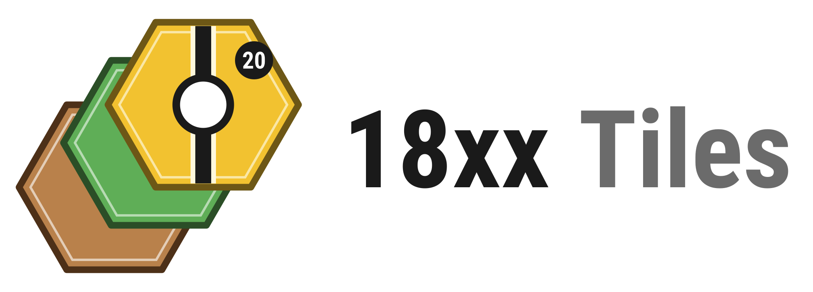

Appendices: A. Running on your own server (VPS) instead · B. Production settings reference · C. Glossary
this style is typed exactly.What happens when someone opens your site, and the order to do the work.
Two outside services help: Resend sends the emails, and GitHub holds your code. Railway builds a new version of the app each time you push code to GitHub.
| Item | Roughly | Notes |
|---|---|---|
| Hosting (Railway) | about $5–6 a month | $5 plan plus small usage; a volume this size costs cents |
| Domain name | about $10–15 a year | for example from Cloudflare or Namecheap |
| Email (Resend) | free | the free plan is far more than this app needs |
| Certificates (HTTPS) | free | Railway gets and renews them automatically |
| # | Chapter | Time | Can wait for something? |
|---|---|---|---|
| 2 | Ask about the game titles | 10 minutes | the reply can take days; you can carry on, but wait for it before you announce the site |
| 3 | Buy a domain | 15 minutes | |
| 4–6 | Choose a host, prepare the code, deploy | 1–2 hours | |
| 7 | Your address and HTTPS | 30 minutes | DNS changes can take up to a few hours to spread |
| 8 | 30 minutes | domain verification can take a little while | |
| 9 | Download backup button | 1 hour | |
| 10 | Launch checklist | 30 minutes |
You end with: a polite question on record with the people whose data the site uses. About 10 minutes, plus waiting for a reply.
The tile data comes from tobymao/18xx, the open-source code behind 18xx.games, under the MIT License, which lets you reuse it. But their license says it does not cover the game titles: 18xx.games shows those with permission from each game's designer or publisher. That permission was given to them, not to you. The site already credits them and says it is not affiliated (see About and credits), but asking is the right thing to do before going public.
https://github.com/tobymao/18xx and sign in to GitHub (create a free account if you do not have one).Title: Permission question: a non-commercial tile reference built from your data Hi! I've built a small, non-commercial site that lists the tiles used in 18xx games, generated from this repository's game files (tile definitions, counts, titles, designers and publishers). It credits tobymao/18xx and 18xx.games, links to both, includes your MIT notice, and states it isn't affiliated with you or any publisher. Your LICENSE notes that the MIT License doesn't cover the game titles. Are you comfortable with this use, and is there anything you'd like me to change (for example how the source is credited)? Happy to take it down or adjust anything. Thanks for all the work on 18xx.games!
This guide is not legal advice. If the site will be widely public or ever commercial, ask someone qualified.
You end with: your own web address, for example 18xxtiles.com, and access to its DNS settings. About 15 minutes.
A domain is your site's name on the internet. Its DNS settings are a small list of records that tell the world where your site and email live. You will add records there in chapters 7 and 8; you do not need to understand DNS beyond copying values.
tiles.yourdomain.com (a subdomain) and keep the main name for something else. The steps are the same.You end with: a decision. This guide uses Railway; appendix A covers a cheaper do-it-yourself server.
| Host | About per month | HTTPS | Effort | Good for |
|---|---|---|---|---|
| Railway (recommended) | $5–6 | automatic | least | easiest and reliable; deploys from GitHub |
| Fly.io | $2–3 plus storage | automatic | low (command line) | a bit cheaper, more hands-on |
| A VPS such as Hetzner | €4–7 | Caddy (appendix A) | most: you look after a Linux server | cheapest; full control |
| Render | $7 and up | automatic | low | its free tier sleeps and suits SQLite poorly |
Prices from 2026 comparison articles; check each provider's pricing page before signing up.
Whatever you pick, the app needs the same three things: run the Docker image, keep the /data folder on a persistent disk, and
answer on HTTPS. Railway does all three with a few clicks.
You end with: everything committed and on GitHub, in a private repository. About 20 minutes.
Your admin password and email key must never be in GitHub. They are already kept out (user-secrets and the .env file are ignored by
git). Confirm it in the repository root:
git status git check-ignore .env
The second command should print .env, meaning git ignores it. If git status lists .env or anything under
data/, stop and ask for help before going further.
18xx-tiles, and choose Private. Do not add a README
(you already have files).git remote add origin https://github.com/YOUR-NAME/18xx-tiles.git git branch -M main git push -u origin main
tools/import/18xx-commit.txt. Nothing to upload.You end with: the app running on a temporary Railway address, with its own disk. About 45 minutes.
https://railway.com with your GitHub account, and choose the Hobby plan.18xx-tiles repository. Allow Railway to read it when asked.Dockerfile and starts a first build. It will fail or restart until the next steps are done; that is expected.Without a volume, the database would vanish every time the app restarts.
/data. That is where the app keeps the database, keys, and backups.Open the service → Variables, and add these. They replace the .env file you use with Docker on your PC. Note the double
underscores: Admin__Email means the setting Admin:Email.
| Variable | Value | Why |
|---|---|---|
ConnectionStrings__Tiles | Data Source=/data/tiles.db | database on the volume |
DataProtection__KeysPath | /data/keys | sign-in keys on the volume, so nobody is signed out on restart |
Backup__Folder | /data/backups | nightly snapshots on the volume |
Admin__Email | your personal email | creates the first admin |
Admin__Password | a strong password | that admin's password (use it to sign in) |
ASPNETCORE_FORWARDEDHEADERS_ENABLED | true | see chapter 7: lets the app see real visitor addresses and HTTPS |
PORT | 8080 | the port Railway sends traffic to; the app listens on whatever PORT says |
App__PublicUrl | the Railway address for now (6.4), later your domain | used in password-reset email links |
/data. On Railway, add the variable RAILWAY_RUN_UID = 0, which runs the app with permission to
write to the volume, and redeploy. Check Railway's volume documentation if the message persists.18xx-tiles-production.up.railway.app. If asked for a port, enter 8080.https:// in front, in the App__PublicUrl variable./api/health. Railway then waits until the app
really answers before switching to a new version.Railway redeploys when variables change (or use Deploy). Open the deployment's Logs. A good first start shows lines like these:
Executing Database Server script '...0001_CreateSchema.sql' Imported commit 46a592e... (seed): 131 games, 2022 tiles, 7275 game-tile links added; ... Created admin account you@example.com. Nightly backups at 03:00 server time into /data/backups, keeping 90. Now listening on: http://[::]:8080
Open the temporary address in your browser. You should see the Games page with 131 games, and be able to sign in with
Admin__Email and Admin__Password.
Backup__RunAt, for example 08:00 (UTC).You end with: the site on your own domain with the padlock. About 30 minutes, plus DNS waiting.
HTTPS needs a certificate for your domain. Railway gets one from Let's Encrypt and renews it automatically; you only prove the domain is yours by adding a DNS record. Railway then sits in front of the app as a proxy: visitors talk to Railway over HTTPS, and Railway passes each request to the app.
Behind a proxy, the app would otherwise think every visitor is Railway, using plain HTTP. That matters for the sign-in limits (10 tries a minute
per visitor would become 10 for everyone together) and for links the app builds. The variable you set in 6.3,
ASPNETCORE_FORWARDEDHEADERS_ENABLED=true, makes ASP.NET Core read the visitor's real address and the original https from
headers that Railway adds. No code change is needed; Microsoft documents this switch for apps behind cloud proxies.
tiles.yourdomain.com.App__PublicUrl to https://tiles.yourdomain.com (your real address) so reset links use it.https://tiles.yourdomain.com: the browser shows a padlock and the Games page. Also try http://: it should switch to
https:// by itself.You end with: real confirmation and password-reset emails. About 30 minutes, plus domain verification.
Until now, emails were written to the log. The app switches to real email as soon as it has a Resend key and a sender address.
https://resend.com.mail.yourdomain.com).| Variable | Value |
|---|---|
Email__ResendApiKey | the key from step 4 (starts with re_) |
Email__From | 18xx Tiles <no-reply@yourdomain.com> (on the domain you verified) |
Email to ... failed; the message after it says why.You end with: a Download backup button for admins, and the habit of using it. About 1 hour, including a first taste of React.
The app already saves a snapshot every night when data changed, and keeps 90. But those snapshots live on the same Railway disk as the database. If the disk or the account had a problem, they would go too. A copy on your own PC or cloud drive fixes that. This chapter adds a button that downloads a zip of the database and the sign-in keys. It is a good first React change because it is small.
| Piece | What it is | Here |
|---|---|---|
| API endpoint (C#) | A URL the server answers. Only the server can read the database, so the backup is made here. | GET /api/admin/backup in AdminController.cs |
| React component | A function that returns what a part of the page looks like. Pages are components made of smaller ones. | AdminImportsPage in web/src/pages/AdminImportsPage.tsx |
| JSX | The HTML-like code inside a component. <Button> is a component from the site's library; <a> is a normal link. |
the actions of the page header |
The button is just a link to the endpoint. When an admin clicks it, the browser asks the server for the file, sending the sign-in cookie automatically, and saves what comes back. No JavaScript code is needed for that, only one element in the page.
Open api/Controllers/AdminController.cs. Every action in this controller is already admin-only, because the class has
[Authorize(Roles = ...)].
Step 1. At the top, add the four using lines marked green so C# can find the zip, database, and backup-settings code:
using System.IO.Compression; using System.Security.Claims; using Dapper; using Microsoft.AspNetCore.Authorization; using Microsoft.AspNetCore.Mvc; using Microsoft.AspNetCore.Mvc.ModelBinding; using Microsoft.Data.Sqlite; using Tiles18xx.Api.Auth; using Tiles18xx.Api.Data; using Tiles18xx.Api.Data.Backups; using Tiles18xx.Api.Data.Repositories; ...
Step 2. Find the line private string ReviewerId() near the bottom, and paste this method just above it:
// GET /api/admin/backup -> a zip file with a fresh copy of the database (tiles.db) and the sign-in keys (keys/), for keeping off the server. [HttpGet("backup")] public IActionResult DownloadBackup([FromServices] SqliteConnectionFactory db, [FromServices] BackupSettings backup) { // 1. A consistent copy of the database, made safely while the app runs (the same method the nightly snapshots use). var copy = Path.Combine(Path.GetTempPath(), $"tiles-{Guid.NewGuid():N}.db"); using (var connection = db.Open()) { connection.Execute($"VACUUM INTO '{copy.Replace("'", "''")}';"); } SqliteConnection.ClearAllPools(); // 2. Put the copy and the sign-in keys in one zip file. var zipPath = copy + ".zip"; using (var zip = ZipFile.Open(zipPath, ZipArchiveMode.Create)) { zip.CreateEntryFromFile(copy, "tiles.db"); if (Directory.Exists(backup.KeysFolder)) { foreach (var key in Directory.GetFiles(backup.KeysFolder)) { zip.CreateEntryFromFile(key, "keys/" + Path.GetFileName(key)); } } } System.IO.File.Delete(copy); // 3. Send it. DeleteOnClose removes the temporary zip once the download has been sent. var stream = new FileStream(zipPath, FileMode.Open, FileAccess.Read, FileShare.None, 4096, FileOptions.DeleteOnClose); return File(stream, "application/zip", $"18xx-tiles-backup-{DateTime.UtcNow:yyyyMMdd-HHmm}.zip"); }
[HttpGet("backup")] makes the method answer /api/admin/backup. [FromServices] asks ASP.NET Core for two
things the app already has: the database connection maker and the backup settings (which know where the keys are). VACUUM INTO is
SQLite's way to write a complete copy of a database while it is in use. The method zips the copy with the keys, deletes the copy, and returns the zip
as a download. System.IO.File.Delete is written out in full because inside a controller File(...) means "send a file".Step 3. Build the API (dotnet build in the api folder, or Build in Visual Studio). It should succeed.
Open web/src/pages/AdminImportsPage.tsx. Near the top of what the component returns, find the page header. It looks like this
(your line breaks may differ):
<PageHeader icon={Download} area="admin" title="Imports" description="Each time the site's data was loaded from tobymao/18xx." />
Step 1. Replace it with this version, which adds an actions setting holding the button:
<PageHeader
icon={Download}
area="admin"
title="Imports"
description="Each time the site's data was loaded from tobymao/18xx."
actions={
<Button asChild size="sm">
<a href="/api/admin/backup">
<DatabaseBackup aria-hidden="true" />
Download backup
</a>
</Button>
}
/>
Step 2. At the top of the file, make two names available: the button component and the icon. Change the first lines to:
import { useEffect, useState } from 'react'
import { DatabaseBackup, Download } from 'lucide-react'
import { getImports } from '@/api/admin'
...
import PageHeader from '@/components/PageHeader'
import { Button } from '@/components/ui/button'
actions={...} passes a piece of page to PageHeader, which shows it on the right of the title (open
components/PageHeader.tsx to see how). <Button asChild> means "style the element inside me as a button", so the
link <a href=...> looks like the site's other buttons. <DatabaseBackup /> is an icon from the Lucide icon set.
Curly braces { } switch from page markup back to JavaScript, for values like actions.Step 3. Check the website code, in the web folder:
npm run lint npm run format npm run build
All three should finish without errors. format tidies spacing for you.
npm run dev), sign in as admin, open Imports, and click Download backup.
A file like 18xx-tiles-backup-20261011-0139.zip downloads. Inside: tiles.db and a keys folder.https://localhost:5173/api/admin/backup directly: it should be refused. Only admins can download.git add -A git commit -m "Admin: download a backup" git push
You end with: confidence that everything works, before you share the address.
https:// your domain shows the padlock; http:// switches to https://.How to look after the site week to week. The runbook in the app has more detail on each.
| Task | How |
|---|---|
| Ship a code change | Commit and git push. Railway builds and deploys automatically; the health check keeps the old version running until the new one answers. |
| Get newer 18xx data | On your PC: python -I tools/import/update_data.py, review the summary, commit tools/import/18xx-commit.txt, push. After the deploy, check Admin → Imports for notes. |
| See what is happening | Railway → service → Logs. Look for "failed" or "error". |
| Take a backup home | Admin → Imports → Download backup. |
| Add the extra games from 18xx.net | Not automatic: the host's build only imports the 18xx.games data. On your PC, import tools/import/18xxnet/18xxnet-games.json as the runbook describes ("Data: extra games from 18xx.net"), into the database you will put on the host. |
| Change a setting | Railway → Variables; the service restarts with the new value. |
| Add another admin | See the runbook, "Accounts and admins". |
| Renewals | The domain renews yearly (turn on auto-renew); certificates renew automatically. |
If data is lost or damaged, put a good copy back. Use a nightly snapshot (on the volume, in /data/backups) or a downloaded zip.
mkdir -p /data/before-restore mv /data/tiles.db* /data/before-restore/ cp /data/backups/tiles-20261010-030000.db /data/tiles.db
/data/backups/keys/* into /data/keys/ first./data/before-restore once you are sure.The cheaper route: a small Linux server, Docker, and Caddy for HTTPS. More work, because you look after the server.
git clone), create .env from .env.example, and set
PUBLIC_URL=https://tiles.yourdomain.com, SECURE_COOKIE=true, plus the admin and email values.Caddyfile next to docker-compose.yml:tiles.yourdomain.com {
reverse_proxy app:8080
}
Then, in docker-compose.yml, change the app's ports: lines to expose: ["8080"] (so only Caddy can reach
it), add ASPNETCORE_FORWARDEDHEADERS_ENABLED: "true" to the app's environment:, and add this service and volume:
caddy:
image: caddy:2
restart: unless-stopped
ports:
- "80:80"
- "443:443"
volumes:
- ./Caddyfile:/etc/caddy/Caddyfile
- caddy-data:/data
depends_on:
- app
volumes:
tiles-data:
caddy-data:
docker compose up --build -d. Caddy gets the certificate on the first visit and renews it itself./data/backups off the server regularly (Download backup, or a scheduled copy to cloud storage). A server can fail.Every setting the app reads, with the name to use in Railway (environment variables).
| Variable | Example | Required? | Meaning |
|---|---|---|---|
ConnectionStrings__Tiles | Data Source=/data/tiles.db | yes | where the database file is |
DataProtection__KeysPath | /data/keys | yes | where the sign-in keys are kept |
Admin__Email, Admin__Password | you, a strong password | for the first start | creates the first admin if missing |
App__PublicUrl | https://tiles.yourdomain.com | for email | the site's address, used in reset links |
Email__ResendApiKey | re_... | for email | without it, emails go to the log |
Email__From | 18xx Tiles <no-reply@yourdomain.com> | with the key | sender address on a verified domain |
Backup__Folder | /data/backups | recommended | nightly snapshots |
Backup__RetainCount | 90 | no | snapshots to keep |
Backup__RunAt | 08:00 | no | time of day, UTC |
Backup__Enabled | true | no | turn snapshots off with false |
ASPNETCORE_FORWARDEDHEADERS_ENABLED | true | yes, behind a proxy | real visitor address and HTTPS |
PORT | 8080 | on Railway | the port Railway sends traffic to; the app follows it automatically |
Cors__AllowedOrigins | empty | no | only if the website is ever hosted on a different address than the API |
RAILWAY_RUN_UID | 0 | only if needed | fixes "permission denied" on the volume (chapter 6.3) |
Never put the password or the API key in the code or in GitHub. On your PC, user-secrets hold them; in Docker on your PC, the
.env file; on Railway, the Variables page.
| Term | Meaning |
|---|---|
| Container, image | An image is a packaged copy of the app with everything it needs; a container is that image running. Dockerfile says how to build the image. |
| Volume | A disk attached to a container that keeps its files when the container is replaced. The app's is mounted at /data. |
| Deploy | Build a new image from the latest code and start it in place of the old one. |
| Environment variable | A named setting given to the app from outside, such as Admin__Email. __ stands for : in setting names. |
| Domain, DNS | Your site's name, and the list of records that say where its site and email are. |
| A, CNAME, TXT records | DNS record types: A points a name at an IP address; CNAME points a name at another name; TXT holds text, used to prove ownership and for email checks. |
| HTTPS, certificate | Encrypted web traffic (the padlock). A certificate proves the site is really yours; Let's Encrypt issues them free. |
| Proxy, reverse proxy | A server in front of the app that receives visitors' requests and passes them on (Railway's edge, or Caddy). |
| Forwarded headers | Notes a proxy adds to each request (visitor address, original https) so the app knows who and how. |
| SPF, DKIM | DNS records that let email providers check that mail from your domain is genuine, so it does not land in spam. |
| API key | A secret string that lets the app use a service (here Resend). Treat it like a password. |
| Endpoint | One URL the API answers, such as /api/admin/backup. |
| Component, JSX | In React, a component is a function that returns a piece of page; JSX is the HTML-like code it returns. |
| Snapshot | A complete copy of the database at one moment, saved by the nightly backup job. |